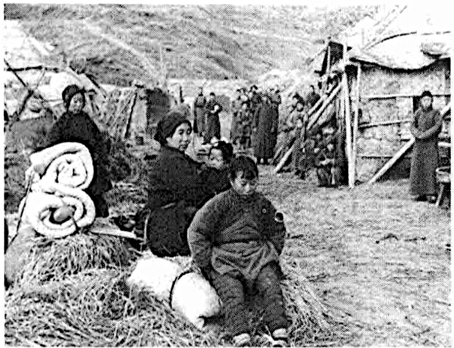
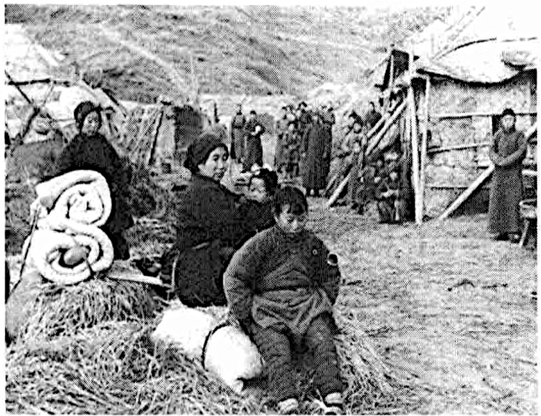

(I) Biography of Bernhard Arp Sindberg
Bernhard Arp Sindberg, Danish, born in 1911, never married. Sindberg was a witness to the Nanjing Massacre by the invading Japanese army and one of the international friends who protected Chinese refugees in Nanjing.
In 1937, Sindberg came to China representing Denmark to assist in protecting the Jiangnan Cement Plant. During the Nanjing Massacre, Sindberg and German doctor Karl Günther established a refugee camp at the Jiangnan Cement Plant, protecting and rescuing over 20,000 refugees. On February 3, 1938, Sindberg submitted his records of Japanese atrocities to the Nanjing Safety Zone Committee. He also investigated and filmed Japanese military atrocities around the cement plant and Qixia Temple with Reverend John Magee, chairman of the International Red Cross Committee in Nanjing. Sindberg left Nanjing in March 1938. After returning to Europe, he screened documentaries filmed in China in Geneva and elsewhere, exposing Japanese military atrocities in Nanjing to the world.
In Nanjing, Sindberg first interacted with Chinese personnel guarding the Jiangnan Cement Plant, then took in surrounding Chinese refugees, encountering Japanese soldiers who turned Chinese into refugees and international friends protecting Chinese refugees. Through these interactions, Sindberg not only showed his heroic side but also revealed his human characteristics as a "flesh-and-blood" individual.
(II) Sindberg as a "Hero"
1. Jiangnan Cement Plant
 

On December 5, 1937, Sindberg's group arrived at the Jiangnan Cement Plant near Nanjing under Smith & Co.'s commission to protect the factory and its machinery. By then, Japanese troops had surrounded Nanjing, and villages near the city experienced Japanese killing and burning.
Within days of their arrival, battles erupted less than 10km from the plant. Japan's 16th Division advanced toward Qixia Mountain, massacring civilians en route. On December 9, Qixia Mountain fell. Facing homeless refugees, from December 11, the cement plant began taking them in, forming north and south refugee zones. By mid-February 1938, it sheltered up to 20,000 refugees.
"Because of your goodwill, ten thousand lives are saved under your protection"
Survivor testimonies show: while Qixia Temple's refugee camp initially offered "porridge," Jiangnan plant refugees "managed their own food," retrieving grain at night. Eventually, a marketplace emerged—selling fried dough, rice balls, and bean residue—where "impoverished refugees even exchanged stamps for goods."
Comparison of Refugee Numbers at Jiangnan Cement Plant vs. Qixia Temple (Dec.1937-May.1938)
The refugee numbers showed an inverse relationship—as other camps closed, Jiangnan's population grew. Key reasons:
- Japan announced forced dissolution of all refugee camps by Feb.4 (later postponed to Feb.8).
- Japanese soldiers frequently harassed Qixia Temple, while foreigners at Jiangnan deterred violations, making it "safer."
- Qixia Temple faced food shortages due to overcrowding.
2. Danish Flag
"Outside the factory, 3,000-4,000 refugees are sheltered under our flag."
Upon arrival, Sindberg hoisted German and Danish flags at the gates to protect the plant. To prevent air raids, he painted a 1,350 m² Danish flag on the roof—visible from the air. "It must be the largest Danish flag ever made," Sindberg wrote on February 3, 1938.
The flags became shields protecting refugees from Japanese soldiers—symbols of safety. Amidst turmoil, the flags fluttering above the plant guarded refugee huts nearby, radiating humanitarian spirit.
- "They asked tailor Wang to make German and Danish flags overnight... placing protective signs with crossed flags at key locations."
- "Village girls went to Jiangnan's refugee zone—safe. The Dane was kind—hung flags, Japanese didn't come."
- "At Jiangnan Plant... Japanese came, foreigners spoke, Japanese left. When soldiers harassed women, the Dane came out with a flag, spoke, Japanese left."
3. Letters & Documents
On December 23, 1937, Sindberg drove to Rabe in a Ford car, delivering two petitions from Qixia refugees.
17,000 refugees "implore mercy and protection from Japanese soldiers' atrocities."
Rabe, as chairman of the Safety Zone Committee, wrote to First Secretary Tanaka:
"I enclose two petitions from Qixia illustrating difficulties matching Nanjing's. May you act upon this."
On January 25, 1938, Günther and Sindberg received a letter signed by 20 Qixia notables titled "To All Concerned in the Name of Humanity." On February 3, Sindberg delivered its German translation to Rabe. Refugees wrote:
"We report this area's situation and temple harassment. Since Nanjing fell, hundreds seek shelter here daily. Currently, 20,400 people gather here—mostly women and children—as men were enslaved."
After detailing 11 days of atrocities:
"We appeal to anyone who can stop these inhuman cruelties. Eighty percent here lost everything—homes destroyed, livestock killed, possessions looted."
On August 16, 1946, Magee testified at the Tokyo Trials:
"Around January-February 1938, I visited Qixia village—15 miles from Nanjing. A cement plant run by a German and Dane flew German flags, sheltering ~10,000 refugees. That evening, I spoke with elders from ≥10 villages. Everywhere mirrored Nanjing: men dared not leave camp fearing execution if failing to provide women..."
Beyond "Sindberg Records" and "Sindberg Photo Album," a February 5, 1938 letter mailed to Denmark—published March 6 by Aarhus Church Times—was subtitled "Famine Threatens Millions of Chinese." Sindberg described:
"You cannot imagine rivers of blood everywhere. Since August, I daily witness war's horrors. Blood, blood, everywhere blood."
"Only ruins line the roads—villages burned, livestock stolen. Corpses of farmers/soldiers litter fields, devoured by starving dogs/beasts."
"The plant shelters 6,000 Chinese farmers—women/children who lost everything. They crowd under roofs or straw huts. Our flag shields them, but food shortage persists—only God knows their suffering."
4. Medical Assistance

On December 20, 1937, hearing Nanjing had stabilized on radio, Sindberg tried delivering wounded Chinese there—as he'd done before: months earlier at Shanghai frontlines, he and Stephens "always brought back wounded soldiers when returning."
Japanese soldiers blocked them midway; Sindberg retreated with the wounded, walked 20km, and hitched a Japanese truck to enter Nanjing. Later, on January 14, 1938, a five-year-old boy arrived at Jiangnan—injured when Japanese soldiers threw grenades at chickens during village raids. Severe wounds and infection cost his eye. Sindberg rushed him by motorcycle to Zhongshan Gate but was denied entry; guards refused hospital transfer. Undeterred, he circled to Taiping Gate, raced through checkpoint, and reached American University Hospital where Dr. Robert Wilson treated the child.
Facing repeated obstacles and rising casualties from Japanese violence, Sindberg, Günther, and Yan Jinghe established a clinic at Jiangnan.
Initially lacking staff/medicine, Sindberg traveled to Nanjing, securing two nurses from Gulou Hospital and Red Cross support. Later, Günther collaborated with traditional doctors since "farmers trust Chinese medicine." The clinic saved countless lives—seriously wounded refugees found timely treatment there.
5. Exposing Japanese Atrocities
Japan closely monitored Western awareness of Nanjing truths, restricting foreign entry and blocking atrocity evidence. Yet such measures couldn't silence justice.
Sindberg learned photography/documentation from Stephens. After December 1937—especially contacting Safety Zone/Red Cross committees—he maintained this habit.
In Nanjing, risking his life, he photographed Japanese crimes, leaving crucial "Sindberg Photo Album" evidence.
Scholars divide the album: 1937 Shanghai frontlines; John Magee's film stills; and Jiangnan refugee zone/outskirts scenes during the massacre.
The third section shocks: ponds filled with executed farmers/disarmed soldiers; hands still tied behind victims' backs; mouths agape in final screams; exposed ribcages; corpses scavenged by animals...
These photos confirmed historical records/refugee testimonies, becoming ironclad evidence.
Sindberg collaborated with other witnesses. On February 16-17, 1938, accompanying Magee to Jiangnan, he drove Magee around outskirts. Magee filmed clinic/refugee camps and wrote narrations/visit reports.
Three days after Sindberg left Nanjing, Japanese military/intelligence learned of his photos, forcing his departure from China.
"Now I understand my son's sudden exit from East. Japanese gave hours' warning. He couldn't withdraw bank money on Sunday."
On April 25, 1938, Sindberg sailed from Shanghai. Reuniting with his father in Geneva during the 24th International Labour Conference, Chinese delegates invited him to screen a documentary about Sino-Japanese war to League of Nations members.
On June 3, 1938, ≈100 League delegates/journalists gathered at China International Library. Before screening, Sindberg spoke, "spending hours explaining." Truth proved brutal—"many wept with anxiety during screening."
As neutral citizen and eyewitness, Sindberg exposed Nanjing Massacre to the world. This historic event enriched research materials, disproving Japanese claims of "fabricated lies."
(III) Sindberg as "A Flesh-and-Blood Person"
(Attitudes toward work, friendships, daily conduct: valued friendship, witty, impulsive)
1. Friendship
On December 20, 1937, blocked from delivering wounded, Sindberg entered Nanjing—first post-battle entry—visiting Safety Zone headquarters. He met committee chairman John Rabe, secretary Lewis Smythe, Christian Kröger, and food commissioner Han Xianglin. On December 22, he met Magee, Wilson and others. Thus, refugee organizations linked city and outskirts—proving vital for information exchange and refugee protection.
(1) Foreign Friends
"Christmas preparations—joyful anticipation replaced by fear/sorrow, uncertainty."
December 25, 1937—sunny Christmas Day for Westerners. But Nanjing remained slaughterhouse hell. Before holiday, Japanese soldiers established brothels by "registering refugees," then executing civilians/disarmed soldiers. On December 24, soldiers looted shops/US Embassy before burning them—"fires lit southern/eastern skies."
Commerce halted citywide. Safety Zone/Red Cross members faced food shortages: "No meat for days; markets empty—no eggs/chicken."
Knowing city hardships, Sindberg remembered friends. On December 23, delivering petitions, he also brought "two pigs, three sweet potato bags"—snowfall provision enabling "Christmas dinner donated by Danish Sindberg."
Later, during city visits, he brought eggs/ducks/piglets/vegetables—"each time greeted with cheers."
(2) Stephens
Mid-September 1937, while driving trucks between Shanghai-Nanjing for Chinese military, Sindberg got new work—driver for war correspondent Pembroke Stephens. Hired, they rode a Chrysler convertible with giant British flag painted on hood, rushing to battlefronts day/night. This exposed Sindberg to war's cruelty, filling him with admiration for brave Chinese soldiers:
"Admirable Chinese soldiers—marching forward singing cheerfully, carrying burdens on bamboo poles. Reinforcements saw wounded comrades but pressed ahead—pitiful scenes inspired them."
"Many nights visiting trenches/rural huts, we found them playing mahjong..."
Sindberg enjoyed Stephens' company; Stephens nicknamed him "Sindbad"—perhaps meaning witty. Stephens taught him photography/documentation. Days spent interviewing in combat zones, visiting soldiers, sometimes delivering wounded to Shanghai hospitals. To family, Sindberg wrote: "Dangerous job, but I prefer nothing else. We work/eat/sleep amid bomb thunder/gunfire."
On November 11, 1937, Stephens died by Japanese gunfire; concrete-ricochet bullets grazed Sindberg's leg. On November 14, he joined many laying flowers at Stephens' Shanghai funeral.
2. Work
Plant protection involved managing refugees, deterring bandits, handling Japanese harassment, coping with shortages, and family separation—a formidable task.
After Qixia fell, Japanese soldiers harassed the plant daily—dozens of times. On January 10, 1938 (lunar 12/9), unwelcome guests arrived: Japanese officers escorting Tokyo Chamber of Commerce vice-chairman's secretary "Shetou" to "inspect" the plant. Snow bore dark footprints, alarming Sindberg: "Japanese thoroughly inspected, photographed factory... whispered mysteriously."
Undoubtedly, Japan wanted to seize Asia's largest cement plant (worth 8 million DKK). Next day, Sindberg asked Jensen: "How proceed? Awaiting instructions." Following corporate orders—"forbid equipment use," "I'm no engineer," "remain polite to Japanese"—he stalled them for days. But on February 5, Sanbongi Corporation attempted "takeover." Late February meetings yielded no "agreement." Representatives left disgruntled.
Despite wartime damage, Jiangnan equipment remained largely intact until 1944 dismantlement—thanks to defenders' efforts.
3. Tactics Against Japanese—Witty, Unconventional
Sindberg developed unique Japanese countermeasures. Under strict lockdown, he could enter/leave Nanjing—discovering "Japanese escort enabled access."
When monks requested a ride into town, he drove to train station, picked up a Japanese soldier—four entered smoothly.
Delivering food to expats, guards stopped him; Sindberg smartly gave them eggs—then officers/soldiers escorted him through checkpoint.
Sindberg demonstrated exceptional adaptability against Japanese blockade—using astute judgment and wit to navigate tight security.